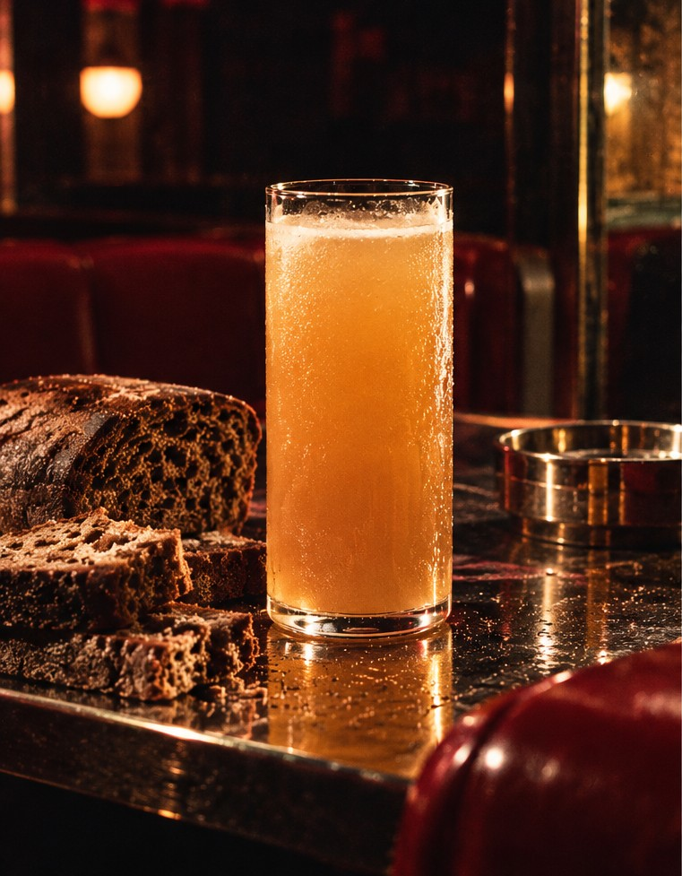
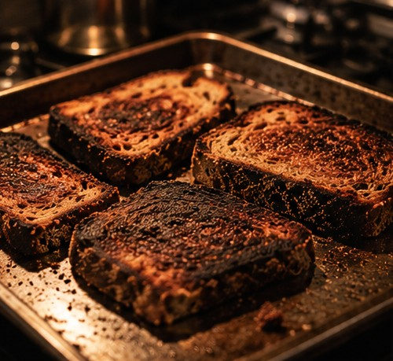
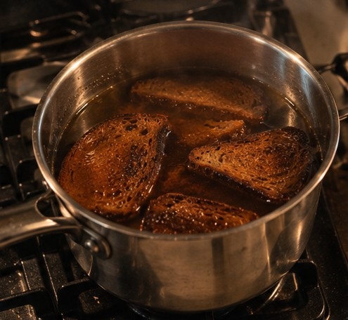
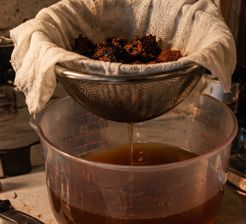

Rye kvass

The original
The classic Russian kvass, made our way.
Rye kvass is the original: rye, water, sugar and a living culture, fermented briefly so it stays light and gently sparkling. Ours is fermented with raw makgeolli and cane sugar, for a clean, crisp, balanced sour-sweet.
How it is made
| Classic rye kvass | Ours | |
|---|---|---|
| Base | Rye bread or rye malt, and water | Toasted rye bread, steeped and strained |
| Culture | Baker’s yeast, or a starter that also carries lactic acid bacteria | Raw makgeolli: its yeast and lactic acid bacteria |
| Sugar | Usually sugar; some recipes use honey or molasses | Cane sugar |
| Taste | Sweet and sour, bready, lightly sparkling | Clear and crisp, with a soft, balanced lactic sourness |
From bread to bottle



Want to try it?
Ask us about tasting, ordering or anything else.